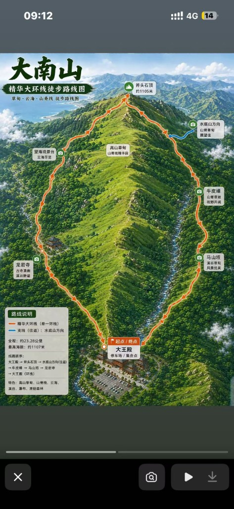
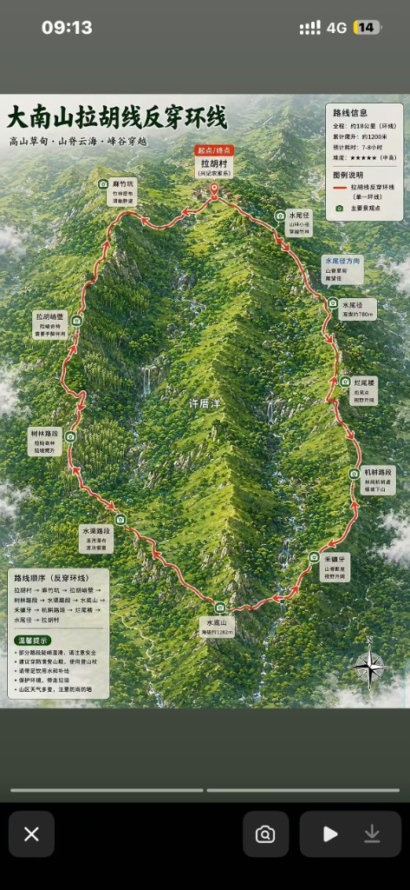

行程概览
2 天 1 晚 · 周六–周日 · 中山 ↔ 惠东大南山 · 精华线双方案 + 山上过夜（计划稿）
停车总原则：导航「惠东大王庙 / 大王殿」（搜哪个能到用哪个）。 不去兴记（拉胡线侧，不顺路）。 到场先确认大王殿 → 龙岩寺有没有摩的 / 村民车 / 包车（公开攻略常见约 20–25 元 / 人、十来分钟量级；周末人多更好叫到）。
| 方案 | 触发条件 | Day1 | 过夜 | Day2 |
|---|---|---|---|---|
| A · 反穿 + 水底山 | 有车接到龙岩寺 / 大榕树缺口 | 接驳龙岩寺 → A9 → 水底山 | 水底山一带露营 | 水底山 → 沼泽 / 斧头石草甸 → 下山大王殿取车 |
| B · 精华线 | 叫不到接驳，或不想等 | 大王殿进山 → 斧头石 | 斧头石一带露营 | 草甸段后下撤回大王殿取车 |
方案 A：反穿前段树荫多、体能分配更顺；可把水底山最高峰吃到，次日再走精华草甸出片段下撤。
里程 / 爬升通常高于纯精华线（公开有「精华 + 水底山」约 17 km、爬升约 1500 m 量级）。
方案 B：不依赖接驳；主菜是斧头石高山草甸（十月底金黄更稳）。
不必硬冲水底山；经典精华线约 12–14 km、爬升约 900–1200 m 量级。
共同点：过夜在山脊 / 草甸，无水源、风大、信号弱；建议带帐篷；结伴；雨大取消过夜。
离线 GPS 必下（两步路搜「大南山精华线」「龙岩寺 大王庙」等）。
下山吃饭默认大王殿附近农家，不是兴记。
十月风景：公开攻略里 10–12 月 都是旺季——底色是草甸 / 芦苇转金黄（十月底已值得来）；
云海秋冬清晨都可能有，更吃「雨后转晴 + 清晨在山脊」，不是保证项；深冬水汽足时往往更稳。
过夜比日间穿越更利于碰云海 / 日出；方案 A 水底山更高、视野大，方案 B 斧头石草甸出片稳——按接驳与体力选，不必为云海死磕 A。
别踩坑：方案 B 体力紧就近下撤即可，不必硬穿到龙岩寺再找车。
背景：精华线 vs 拉胡线
据两步路社区公开帖与常见攻略整理，仅作背景对照；轨迹、停车与饭点以现场 / 高德为准。 路线示意图见下方 网友示意图。
大南山成熟徒步大致分两半：精华线（大王庙侧 ↔ 龙岩寺侧，草甸出片）与 拉胡线（兴记 / 拉胡村侧，经峭壁冲水底山）。两条线可在脊线一带衔接； 也有人走「兴记 → 水底山 → 斧头石 → 大王庙」大环，或「大榕树反穿出兴记」商团常见走法。
| 精华线 | 拉胡线 | |
|---|---|---|
| 典型走法 | 大王庙 ↔ 斧头石 / A9 ↔ 龙岩寺（正穿或反穿） | 兴记进出环线；或兴记 ↔ 大榕树 / 龙岩寺穿越 |
| 里程 / 耗时 | 约 12–14 km · 常见 6–8 h | 环线约 15–18 km · 常见 8–12 h（易摸黑） |
| 难度印象 | 经典、人多、路相对成熟；仍有陡坡碎石 | 更虐：拉胡峭壁多段拉绳；反穿变下行更吃鞋与心理 |
| 风景重心 | 斧头石草甸、山脊芦苇 / 云海（「广东小武功山」常指这段） | 拉胡峭壁、山脊草坡、水底山冲顶（约 1280 m 级） |
| 停车 | 大王庙 / 大王殿（约 10–15 元 / 天量级）；反穿可停龙岩寺再接驳 | 百木洋 · 兴记农家乐（亦可对面驿站 / 世外桃源；常提前联系芳姐留位） |
| 走完吃饭 | 大王庙附近农家 / 农庄（炒粉、客家菜等），不是兴记 | 兴记农家乐（酿豆腐、土鸡煲一类；同片还有强记、一亩三分地） |
| 接驳 | 大王庙 ↔ 龙岩寺常见摩的 / 村民车，约 20–25 元 / 人量级 | 兴记 ↔ 大榕树 / 龙岩寺盘山缺口；跟司机说清「龙岩寺」还是「半山腰」 |
精华线 · 路线要点
- 导航：「惠东大王庙 / 大王殿」或「惠东龙岩寺」。 反穿常车停大王庙，再接到龙岩寺 / 大榕树缺口进山，下山直接取车。
- 节点：龙岩寺 / 大榕树 → 山脊草甸 → 斧头石 →（可接 A9）→ 大王庙； 正穿则反向。全程无正规补给，饮水自备。
- 腐败：终点侧在大王庙吃饭；公开攻略几乎不写兴记。
- 示意图：见 精华大环线（网友图含更长环线变体，勿与经典 12–14 km 单日精华混为一谈）。
拉胡线 · 路线要点
- 导航：「兴记农家乐」（惠东多祝 / 百木洋）；备用「许屋洋」。 拉胡村门口曾作起点，近年多改从兴记进出。
-
常见变体（两步路帖常见归纳）：
- 兴记 → 水渠 → 树林 → 峭壁 → 水底山 → 烂尾楼 / 机耕路 → 兴记（经典环，约 18 km 量级）
- 兴记 → … → 水底山 → A9 → 斧头石 → 大王庙（大环，更长，有人两天）
- 大榕树 → A9 → 水底山 → 峭壁 → 水渠 → 兴记（反穿；商团 / 大巴常见）
- 腐败：走完回兴记吃饭最常见；芳姐一线也常被提到停车、住宿、应急联系。
- 示意图：见 拉胡线反穿环线。
和本趟的关系：停车与下山吃饭挂大王殿，不走兴记拉胡环。 方案 A借用精华线反穿入口（龙岩寺）并加水底山过夜，次日经草甸下大王殿； 方案 B是精华线侧斧头石过夜，不依赖龙岩寺接驳。 两步路开帖里的兴记吃饭 / 拉胡峭壁环，仅作对照，不是本趟默认。
行程路线图
先看本书实际走法（高德底图），再对照网友全环线图。
我们的实际路线
车停大王殿。图上实线偏方案 A（有接驳：龙岩寺 → 水底山过夜 → 草甸 → 大王殿）； 虚线偏方案 B（无接驳：大王殿 → 斧头石过夜 → 下撤）。 折线为公开地名估算，仅作方位示意，不能当离线导航。
A：接驳龙岩寺 → 水底山过夜 → 次日经沼泽 / 斧头石草甸下大王殿。 B：大王殿进 → 斧头石过夜 → 次日下撤大王殿。
网友示意图
网友示意图 · 供对照；与本书行程可能不完全一致（本书非精华大环线全环，亦非一日走满 18 km 反穿环）。 点图可放大。


（龙岩寺→望海→草甸→斧头石→牛皮嶂→马山坳；含水底山支线）


（廊竹坑→峭壁→树林→水渠→水底山→禾镰牙→机耕路→烂尾楼→水尾径）
驾车导航段
有明确店名/地名的路段提供高德搜索链接；接驳现场谈价，无固定终点的只列文字。
当日时间轴（约，计划估算）
十月底日落约 17:40–18:00。 08:00 马鞍岛出发；到点看高德预估并预留堵车容错（常见约 2–2.5h，目标午前到大王殿）。 到场先问接驳再定 A / B；天黑前必须到过夜点搭好营。
- 08:00中山马鞍岛出发；检查饮水、帐篷、头灯、离线轨迹（精华线 + 水底山相关）
- 上午自驾 马鞍岛 → 惠东大王庙 / 大王殿（以导航 ETA 为准，预留堵车）
- 到场后大王殿停车；问摩的 / 村民车 / 包车能否到龙岩寺（说清「龙岩寺」或「大榕树缺口」）
- 方案 A有车且时间宽裕：接驳龙岩寺 → A9 → 水底山；午饭后冲顶、找背风营地过夜
- 方案 B无车或到得晚：从大王殿登山口上山 → 斧头石草甸；午饭后选营地过夜
- 天黑前到过夜点搭营；日落 / 云海碰运气；早睡，次日清晨再看云海窗口
龙岩寺反穿 + 水底山过夜
车停大王殿，接到龙岩寺 / 大榕树进山。 Day1：龙岩寺 → A9 → 水底山过夜。 Day2：经沼泽 / 斧头石草甸下撤大王殿取车、吃饭。 公开价：大王庙↔龙岩寺拼车约 20–25 元 / 人量级，以现场为准。
精华线 · 斧头石过夜
叫不到车或不想等：从大王殿直接进山，走精华线主风景段， 斧头石一带过夜；次日草甸后再下撤回大王殿。 不强制冲水底山，省接驳、路线更短。
-
中山马鞍岛（出发点）
自行导航 · 不链
-
惠东 · 大王庙 / 大王殿（停车）
搜「大王庙」或「大王殿」以能导航到为准。 公开参考：停车约 10–15 元 / 天（过夜可能更高），以现场为准；周末早到占位。 终点侧有农家 / 农庄，下山吃饭方便。 接驳：下山口常见摩的 / 村民车往返龙岩寺，约 20–25 元 / 人量级；谈好「龙岩寺」还是「半山腰 / 大榕树缺口」。
-
龙岩寺 / 大榕树（方案 A 起点）
反穿常见从盘山公路「大榕树缺口」进；轿车盘山路窄。 无接驳则改方案 B，不必自己开盘山路硬上。
-
A9 垭口
两峰之间低点；体力不支可从 A9 下撤龙岩寺方向（需再找车回大王殿）。 往水底山一侧多为连续爬升「大 V」。
山野点位 · 不链导航
-
住宿 · 水底山一带（方案 A）
最高峰制高点；开阔、风大，运气好有云海。 过夜：露营（建议帐篷）；无水源、信号弱、夜里凉。 附近或有越野车营地痕迹，勿依赖补给。结伴；大风大雨改山下农家。
山野点位 · 不链导航
-
住宿 · 斧头石一带（方案 B）
精华线主峰 / 草甸核心；十月底金黄芦苇出片。 过夜：草甸或背风处露营；同样无水源、风大。 次日可先走一段草甸再下撤大王殿，不必硬穿到龙岩寺。
山野点位 · 不链导航
当日时间轴（约）
- 约 06:30–07:30起床收装；简单早餐；检查头灯（下撤林段可能偏暗）
- 方案 A水底山 → 沼泽 / 斧头石草甸 → 下山大王殿（视体能约 4–7h）
- 方案 B斧头石草甸段 → 下撤回大王殿（通常短于 A）
- 约 12:00–14:00大王殿休整、农家午饭；换干净衣服
- 约 13:30–16:30自驾 大王殿 → 中山马鞍岛（约 2–2.5h）
草甸出片后再下撤
水底山下来后接精华草甸（沼泽 → 斧头石方向），再下到大王殿。长陡下坡护膝 + 杖；碎石路慢行。
就近下撤大王殿
斧头石过夜后不必硬走到龙岩寺；原路或轨迹下撤回停车点即可。雨雾大优先保安全。
-
沼泽地 · 斧头石草甸
精华线高光：连片草甸 / 秋冬芦苇。方案 A 次日经过；方案 B 可在此多留影再下。 全程垃圾带走。
山野路段 · 不链导航
-
大王庙 / 大王殿（取车 / 吃饭）
下山后农家菜 / 炒粉一类（人均公开约几十元量级）；取车回中山前补油、补水。
-
终点 · 中山马鞍岛
自行导航 · 不链
物品清单
本趟过夜露营实装（按系统分类列表）。怎么买 / 家底见 装备。 有实测用实测，其余估重。口径 = 包内（抓绒防风穿着；杖手提、鞋脚上不算）。
包内合计约 13–14 kg（贴艾王约 15 kg 上限；出发前实装称一次）
背负 小计 ≈1.4 kg
- 艾王 35+5L≈1.4 kg
庇护 · 睡眠系统 小计 4.5 kg
- 帐篷（山脊防风固定）2.2 kg
- 睡袋1.3 kg
- 充气垫0.6 kg
- 蛋巢（垫底防扎；营地多石）≈0.4 kg
- 耳塞（周末山上或有人夜走）极轻
穿着 · 鞋袜 小计 ≈0.7 kg
- 悍途登山鞋（脚上）不计包
- 袜两双、内裤两条（一穿一带）≈0.15 kg
- 速干内衣 + 抓绒 + 防风外套（建议穿着）不计包
- 速干长裤；营地拖鞋≈0.2 kg
- 护膝（负重下坡戴）≈0.1 kg
- 手套≈0.1 kg
- 轻量雨衣 / 背包罩（山脊风大，不带伞）≈0.25 kg
水 小计 ≈4.0 kg
- 水 3 L3.0 kg
- 椰子水 ×2≈1.0 kg
- 山上无水源；果可补一点水分，勿提前喝光
食物 小计 ≈1.7 kg
- 馒头 ×4（Day1 约 3、Day2 早约 1）≈0.5 kg
- 肉约 1 斤（卤制熟食，免煮）0.5 kg
- 香蕉 ×2（一天一根）≈0.3 kg
- 柚子半个≈0.4 kg
- 路上 + 过夜自备；Day2 午饭下山农庄吃；不必带灶具
照明 · 电子 小计 ≈0.6 kg
- 头灯（确认能头戴 + 续航）≈0.25 kg
- 充电宝（≥10000 mAh）≈0.3 kg
- 手机 + 离线轨迹（身侧；「精华线」「龙岩寺 大王庙」；方案 A 含水底山）不计包
助行 小计 不计包
- 登山杖一对（手提）≈0.5 kg · 不计包
证件 · 车 小计 极轻
- 身份证；驾驶证、行驶证；车钥匙极轻
- 现金小额（接驳约 20–25 元 / 人、停车 10–20 元级）极轻
- ETC；车载充；手机防水袋极轻
急救 · 卫生 · 应急 小计 ≈0.3 kg
- 创可贴、水泡贴；止痛药、肠胃药、个人常备药≈0.1 kg
- 体温计（优先电子）≈0.05 kg
- 碘伏棉棒、绷带少量；感冒 / 退烧药按需≈0.05 kg
- 湿巾、纸巾、垃圾袋≈0.05 kg
- 哨子 / 箔毯≈0.05 kg
可留车：折叠伞、下山换洗衣。超 15 kg 优先砍杂物、不砍饮用水。
行前预约清单
- 看天气预报；雨天山路极难走，大风大雨取消过夜
- 下载离线地图 + 精华线 /（方案 A）含水底山轨迹；标记 A9、斧头石、下撤点
- 约伴（过夜不建议独行）；互留紧急联系人
- 导航大王庙 / 大王殿；到场确认能否接驳龙岩寺（谈价、说清停靠点）
- 备足饮水（无水源；见物品清单）；帐篷防风
- 充电宝、头灯满电；前一晚装包试背
- 告知家人进出时间与下山点（大王殿）
住宿速查
仅列计划过夜点；正规酒店待定不编。
| 夜 | 住宿 | 备注 |
|---|---|---|
| 10.31 · A | 水底山一带露营 | 最高峰附近；无水源、风大；帐篷 + 睡袋/垫；恶劣天气改山下大王殿侧农家 |
| 10.31 · B | 斧头石一带露营 | 草甸核心；无水源、风大；同上装备；次日就近下撤大王殿 |
| 备选 | 大王殿侧农家 / 山下住宿 | 取消过夜时用；店名电话待现场确认 |
费用明细（预估）
账单按本人自驾过夜线预估；同行费用另计。金额多为待定占位，回来后按实报改。
交通 / 油费停车
| 项目 | 说明 | 金额（元） | 备注 |
|---|---|---|---|
| 往返油费 / 高速 | 马鞍岛 ↔ 惠东大王殿 | 待定 | 约 2–2.5h / 单程 |
| 大王殿停车 | 现场收费 | 10–20 | 公开参考约 10–15 / 天，过夜或更高；以现场为准 |
| 接驳车（仅方案 A） | 大王殿 → 龙岩寺 | 约 20–25 / 人 | 摩的 / 村民车常见价；整车包价另议；无车则走方案 B |
| 小计 | 待定 |
住宿
| 项目 | 说明 | 金额（元） | 备注 |
|---|---|---|---|
| 山上露营 | 水底山或斧头石 | 0 | 非经营性营地；自备帐篷 |
| 小计 | 0 |
餐饮
| 项目 | 说明 | 金额（元） | 备注 |
|---|---|---|---|
| 途中干粮 / 水 | 行前超市采购 | 待定 | |
| 下山农家餐 | 大王殿一带 | 待定 | 店名待定 |
| 小计 | 待定 |
门票活动
| 项目 | 说明 | 金额（元） | 备注 |
|---|---|---|---|
| 登山门票 | 野生徒步线 | 0 | 一般无门票；以现场为准 |
| 小计 | 0 |
| 合计 | 个人账（预估） | 待定 | 回来按实报填 |
理想版 vs 备选版
计划走法
- 08:00 出发 → 车停大王殿 → 有接驳且时间够则 A（水底山），否则 B（斧头石）
- 次日清晨看云海窗口 → 下撤大王殿午饭 → 回马鞍岛
更稳妥的备选
- 风雨大：取消过夜，改当日精华线轻装
- 方案 A 体力紧：A9 下撤，不强冲水底山
- 嫌山脊风大：改山下大王殿侧住宿
- 新手结伴；独行优先日间精华线
注意事项
- 难度：方案 B 精华线约 12–14 km / 爬升约 900–1200 m；方案 A 加水底山通常更长更虐。过夜负重再加一档。
- 风景：十月底金黄草甸较稳；云海秋冬清晨都可能有，过夜 + 雨后转晴更利于碰。水底山更高，斧头石草甸出片稳。
- 天气：山脊风大、昼夜温差大；约 1000 m 以上易浓雾。防风层 + 帐篷防风；雨天山路极难走。
- 信号与导航：山里常无信号，离线 GPS 必下。接驳说清龙岩寺 / 大榕树缺口。
- 水：露营区无水源，全部自带；至少约 2.5–3 L / 人。见「物品清单 · 个人准备」。
- 过夜：水底山 / 斧头石均为露营；结伴、留足电量与用水；不适或天气转坏果断下撤大王殿。
- 停车与接驳：大王殿早到；接驳约 20–25 元 / 人量级，没有就走方案 B——不必绕兴记。
- 环保：无垃圾桶，垃圾全部带走。